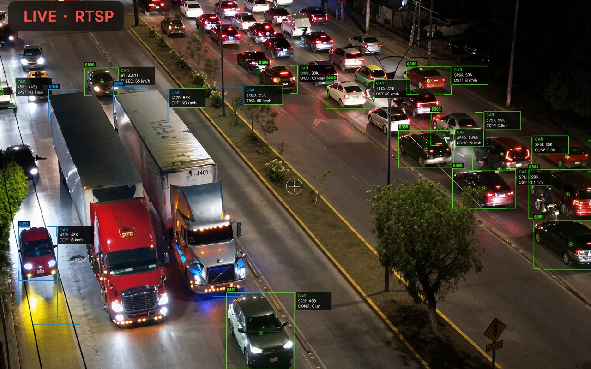
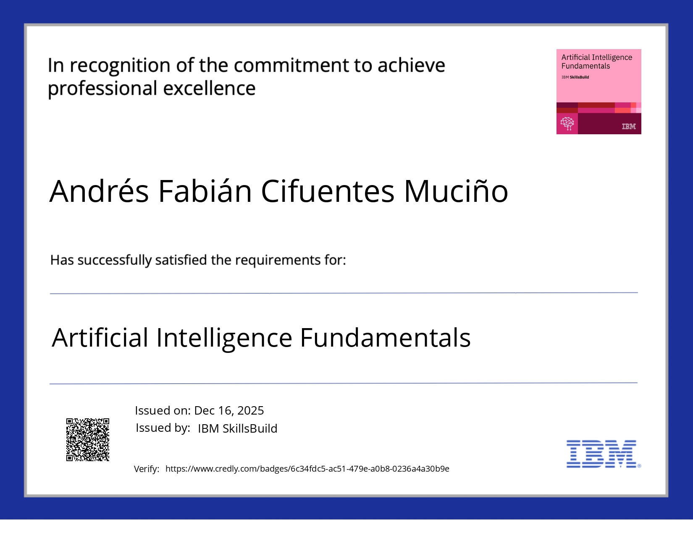
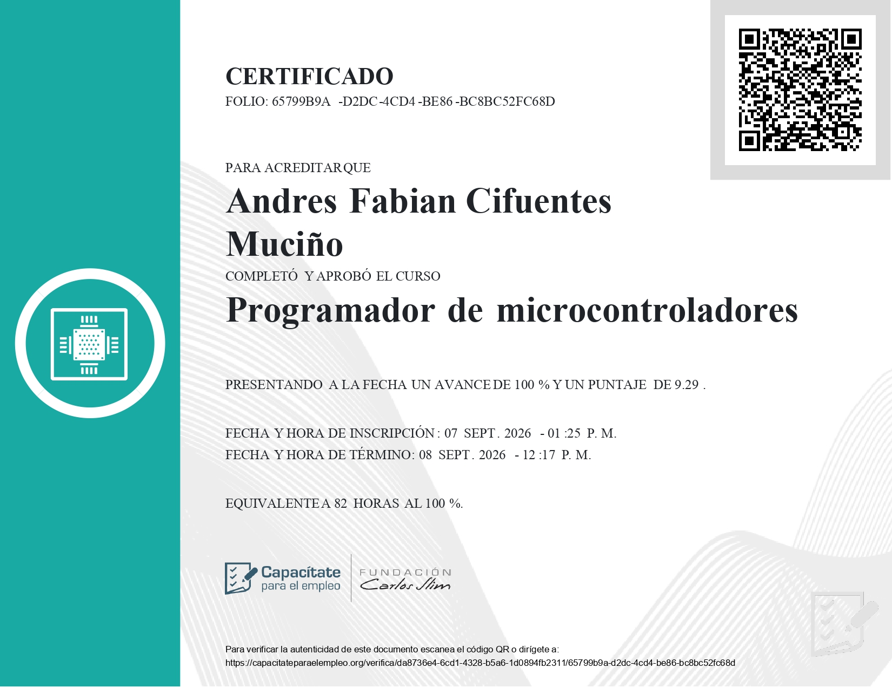
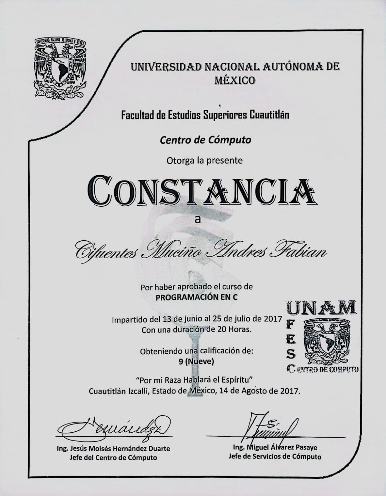
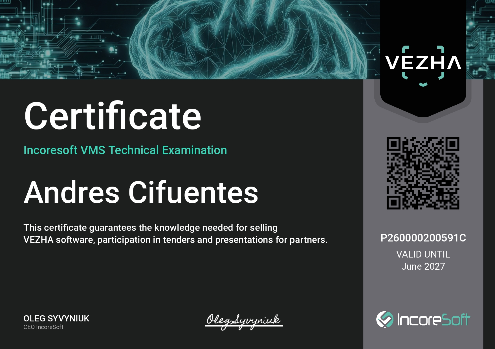
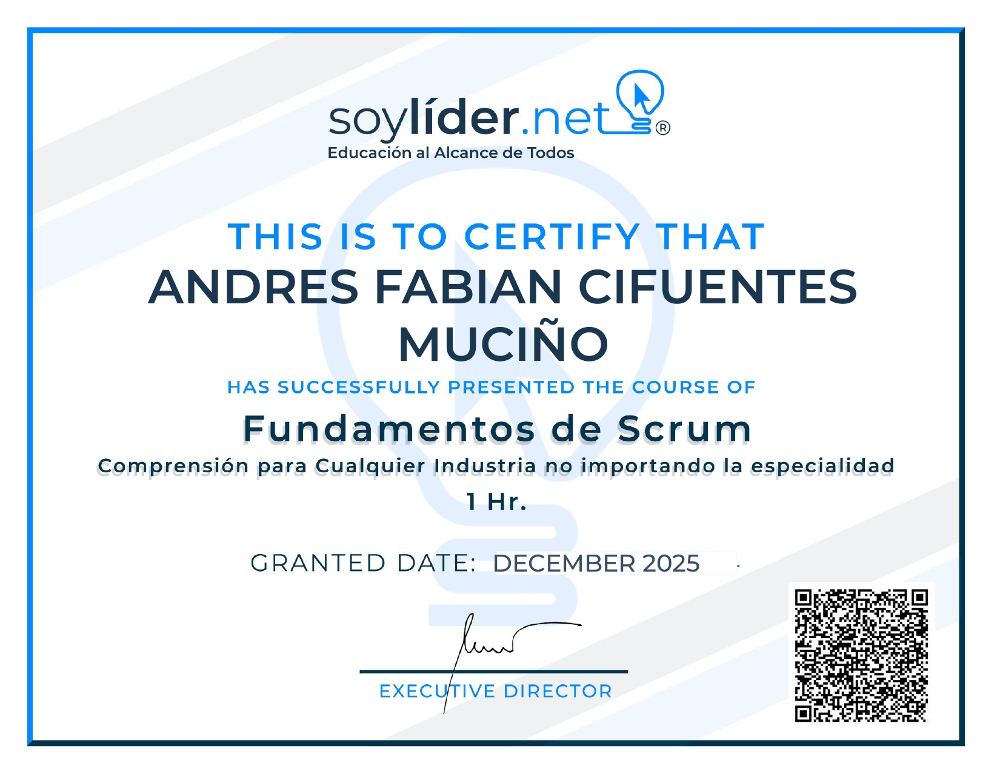
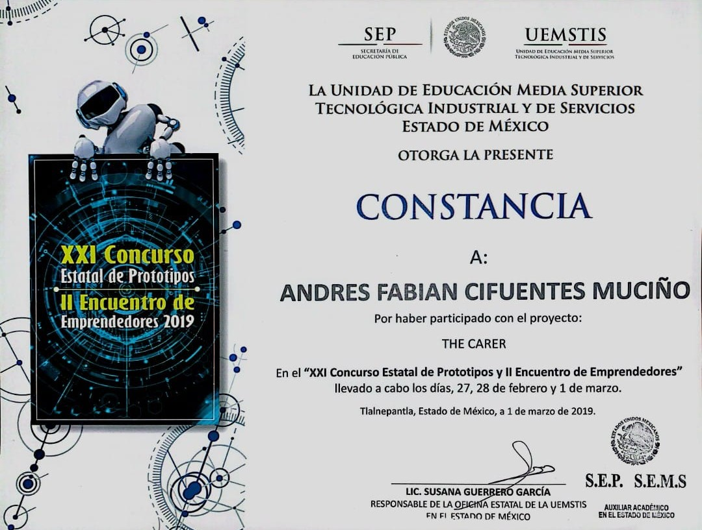

RTSP · ONVIFIngeniero Mecatrónico
Andrés
Cifuentes
Sistemas Embebidos · Electrónica · Programación · Visión Artificial · Drones
Ingeniero en Mecatrónica que une electrónica, sistemas embebidos, programación y visión por computadora en soluciones completas de hardware y software. Del firmware y los protocolos de comunicación al análisis de video en tiempo real —cámaras IP y drones DJI con Python—, construyo cosas que funcionan en campo.
- RTSP/RTMP/ONVIF
- Python · OpenCV
- Raspberry Pi · Jetson · ESP32
- Cámaras IP · Drones

Sobre mí
No me caso con una sola capa del proyecto: diseño la electrónica, escribo el firmware y el software, y llevo la visión por computadora a funcionar en tiempo real.
Sistemas embebidos, electrónica, programación y visión artificial: combino esas piezas en soluciones completas de hardware y software, desde el prototipo hasta la validación en campo. El análisis de video en tiempo real, las cámaras IP y los drones encajan de forma natural en ese mismo conjunto de herramientas.
¿Tienes un proyecto? Hablemos
Hardware, software y visión en tiempo real.
andrescifwork@gmail.comRTSP/RTMP/ONVIFVideo en tiempo real
Edge AIInferencia a bordo
HW+SWIntegración completa
Portafolio
Proyectos seleccionados


Trayectoria
Experiencia profesional y capacidades
Experiencia profesional
Incoresoft — Preventa y Postventa
1 añoAnalítica de video con IA · Cámaras IP
Empresa de analítica de video que procesa flujos de cámaras IP en tiempo real con IA (Face Recognition, LPR, Object Detection). Brindé soporte técnico e instalé el software de análisis en servidores de clientes (MiddlewareCore, Process Runner, VMS Core y Recording Server), activé licencias, interpreté resultados y realicé configuración y ajuste fino de cámaras IP Axis, Hanwha, Hikvision, Dahua y Vivotek.
Termoflow de México — Sistemas Embebidos
Sep 2022 – Ago 2025Prototipos embebidos · Firmware
Desarrollo integral de prototipos embebidos: selección de hardware, electrónica, firmware, software y pruebas. Implementación de protocolos de comunicación, modernización de sistemas legacy con Raspberry Pi, diseño CAD y fabricación aditiva, además de documentación técnica y demostraciones a clientes.
Capacidades técnicas
01
Integración Hardware/Software
Sistemas basados en Raspberry Pi, Jetson y ESP32; configuración de red y comunicación entre dispositivos. Protocolos: UART, I2C, SPI, TCP/IP, RS-485.
02
Programación y firmware
Python, C/C++ y Java; firmware (MicroPython/C++), scripts de integración y control de versiones con Git.
03
Electrónica y PCB
Diseño de PCB en KiCad, soldadura SMD/THT, medición con osciloscopio y validación de circuitos.
04
Visión artificial y video en tiempo real
OpenCV y TensorFlow; análisis de flujos RTSP/RTMP/ONVIF con Python, incluyendo cámaras IP y drones DJI.
05
Diseño CAD y prototipado
SolidWorks y Fusion 360, impresión 3D, CNC y pruebas funcionales para validación rápida.
Ingeniero en Mecatrónica, TecNM (2024) · Preventa/Postventa en Incoresoft (1 año) · Sistemas Embebidos en Termoflow de México (2022–2025)
Habilidades
Lo que aporto
Técnicas
Sistemas embebidos (Raspberry Pi · Jetson · ESP32)
Programación · Python / C++ / Java
Video en tiempo real · RTSP/RTMP/ONVIF
Visión artificial · OpenCV / TensorFlow
Electrónica y PCB · KiCad / soldadura
Cámaras IP y VMS · Axis/Hanwha/Hikvision/Dahua/Vivotek
Linux · Git · CAD · Web
Profesionales
Formalidad y profesionalismo
Soporte técnico y trato con clientes
Autodidacta · Trabajo en equipo
Comunicación asertiva
Demos y capacitación a usuarios
Paquetería Office
Idiomas
Español — Nativo
Inglés — Intermedio
Movilidad internacional
Cuento con pasaporte mexicano vigente y Visa Americana B1/B2 (turismo/negocios) con vigencia de 5 años. Disponibilidad total para viajar.
Certificados y extracurricular
Aprendizaje continuo






Contacto
Construyamos algo que funcione.
Ingeniero enfocado en sistemas embebidos, electrónica, visión por computadora y análisis de video en tiempo real. Disponibilidad inmediata.
- Emailandrescifwork@gmail.com
- Tel+52 56 4244 7425
- UbicaciónCDMX, México